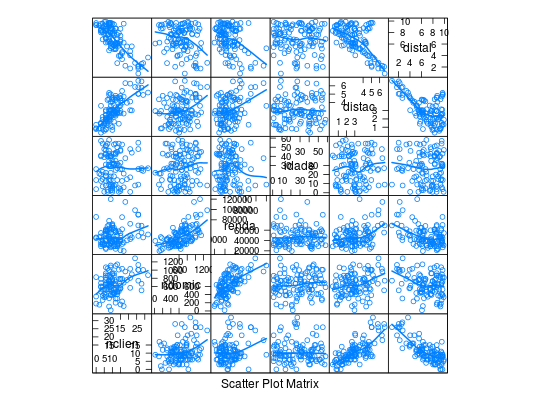

Dados apresentados em Neter et al. (1996) sobre um estudo do perfil dos clientes de determinada loja oriundos de 110 áreas de uma cidade. O interesse do estudo é relacionar o número esperado de clientes em cada área com as demais cinco variáveis explicativas registradas
Um data.frame com 110 observações e 6 variáveis.
nclienndomicrendaidadedistacdistalPAULA (2004), Exemplo 4.2.6, pág. 299.
Neter, J., Kutner, M. H., Nachtsheim, C. J., Wasserman, W. (1996). Applie Linear Regression Models (3tr ed.). Irwin, Illinois.
data(PaulaEg4.2.6)#> Warning: data set ‘PaulaEg4.2.6’ not foundstr(PaulaEg4.2.6)#> 'data.frame': 110 obs. of 6 variables: #> $ nclien: int 9 6 28 11 4 4 0 14 16 13 ... #> $ ndomic: int 606 641 505 866 599 520 354 483 1034 456 ... #> $ renda : int 41393 23635 55475 64646 31972 41755 46014 34626 85207 33021 ... #> $ idade : int 3 18 27 31 7 23 26 1 13 32 ... #> $ distac: num 3.04 1.95 6.54 1.67 0.72 2.24 0.77 3.51 4.23 3.07 ... #> $ distal: num 6.32 8.89 2.05 5.81 8.11 6.81 9.27 7.92 4.4 6.03 ...library(lattice) splom(PaulaEg4.2.6, type = c("p", "smooth"), lwd = 2)